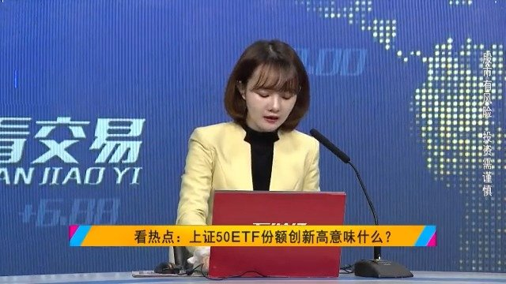

聪明钱都在加仓指数基金。@网易财经:【视频|突破200亿元！上证50ETF份额逼近15年牛市顶点】中国最早也是最大的股票ETF——华夏上证50ETF最近又创下多年新高了，上交所公布的最新数据显示份额突破了200亿份！那为何在股市行情不是很好的情况下，etf的规模却在大幅增加？【视频】突破200亿元！上证50ETF份额逼近15年牛市顶点 网易财经的秒拍视频  6万次播放 23:25
回复@Compass_J:不贵的时候买，等着涨，是我能想到最靠谱的投资方式。总是想精准买在起涨点，不是说不行，风险很大//@Compass_J:先行指标也得讲点逻辑吧，，再不济也得讲点情绪不是，，不讲情绪也得讲钱啊，，，对不？@ETF拯救世界:以后发车前涨不涨真的无所谓了。A股部分已经买的差不多，如果有深跌还能大幅加仓，没有基本就这样了。踏踏实实的看戏。
回复@淡如蓝2002:第一，股市并不是经济增长快就涨的快，增长慢就下跌。第二，股市是先行指标。等一切都变好，股市的牛市行情已经走了70%//@淡如蓝2002:请问一下，都说2019年甚至接下来二三年经济都不行，那么股市也一样没行情吧？那底部可能更长了吧//@ETF拯救世界:回复@小狗上马路:还有S计划啊@ETF拯救世界:以后发车前涨不涨真的无所谓了。A股部分已经买的差不多，如果有深跌还能大幅加仓，没有基本就这样了。踏踏实实的看戏。
回复@小狗上马路:还有S计划啊//@小狗上马路:请教一下E哥，如果不发车，维持目前仓位，那么，每月积存的现金是否一直留着？@ETF拯救世界:以后发车前涨不涨真的无所谓了。A股部分已经买的差不多，如果有深跌还能大幅加仓，没有基本就这样了。踏踏实实的看戏。
回复@乘凉的蜥蜴:chinaetfs//@乘凉的蜥蜴:请教大家一个问题 最近关注的Ｅ大 请问Ｅ大主要在哪里发文章呢 公众号我搜过etf拯救世界感觉不太对呢@ETF拯救世界:几乎每一个已经回复第二轮答题邮件的朋友都提到了一件事，即在整理资料过程中自己的进步。要知道，第二轮的题目只是整理三个月的文字资料及2个月的发车数据。可想而知，整理完过去十三年的文字及十年计划数据后会有多大的新感受。以及，各位未来看文章的时候也会有很多感悟。确实是一件很有意义的事情。
 【视频】突破200亿元！上证50ETF份额逼近15年牛市顶点
【视频】突破200亿元！上证50ETF份额逼近15年牛市顶点  网易财经的秒拍视频
网易财经的秒拍视频